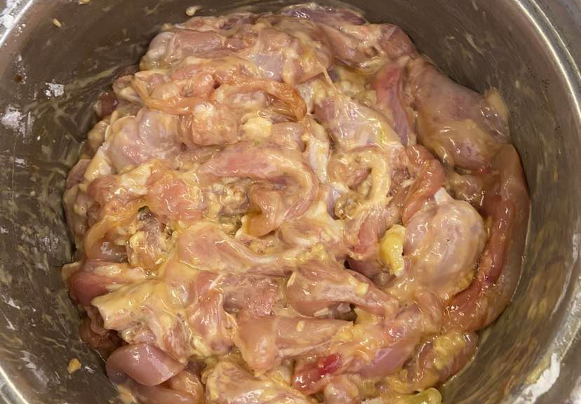
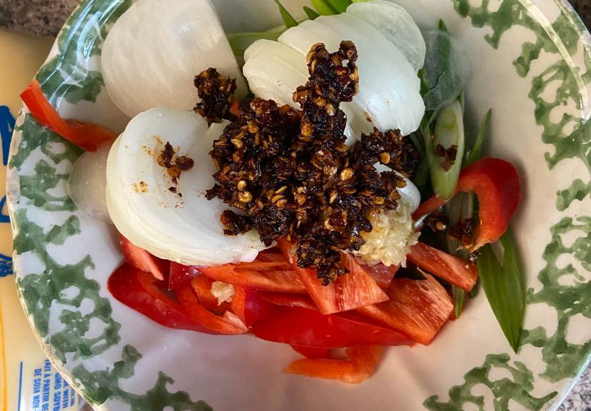
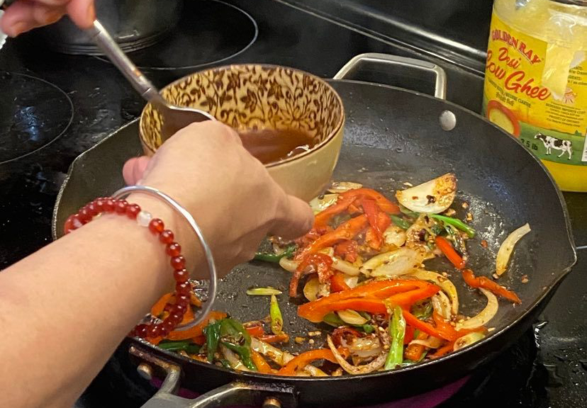
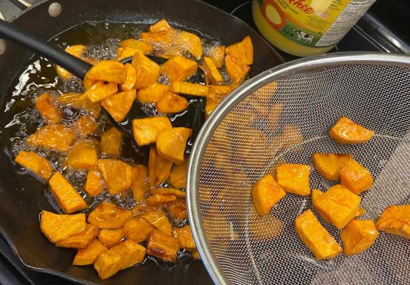
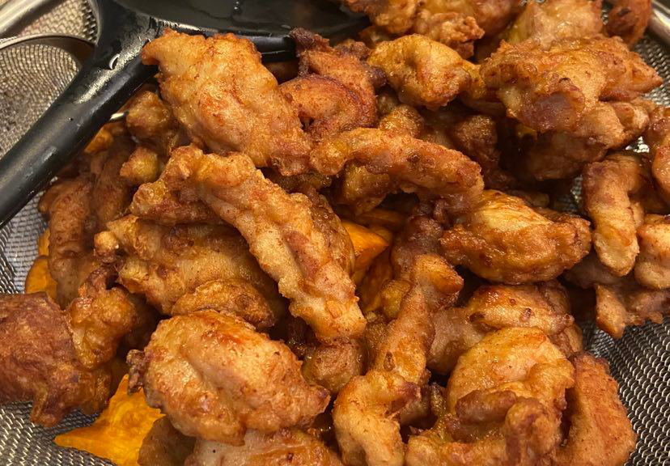

Biryani
Bee-ree-ani
“Our most special food is Chilli Chicken!
Its spicy, crispy, and the best mix of Indian and Chinese food!
Your brother especially loved it a lot so I made lots!”
1 / 4

Chilli Chicken Ingredients!
2 / 4

Chicken
3 / 4

Vegetables (combine in one bowl)
4 / 4

Final Sauce (ignore the pan!!)
Ingredients
Rice and Sauce
- 6 cups of Basmati rice
- 1 packet of 2 Spices (Korma & Sindhi biryani)
- 1/2 cup Cow ghee
- 1/2 corn oil
Chicken and Vegetables
- 20 pieces of chicken legs
- Chicken broth
- 1/2 cup of tamarind chutney sauce
- 5 big onions (cut into this strips)
- 3 big ground tomatoes
- One large cauliflower
Final Sauce (combine in one bowl)
- Cinnamon bay leaf, cloves ect
- 1 cup of chicken broth
Rice Yogurt
- 1 tablespoon lime yogurt (makes rice fluffier)
- Add 1 pinch of saffron
- 1/4 cup of milk
1 / 4
Chilli Chicken Method!
2 / 4

Sweet Potatoes
3 / 4

Cooking Chicken
4 / 4
Chicken and Veggies with Sauce
Method
Sweet Potatoes
- Cover large pan with corn oil on high heat.
- Put chopsticks in oil and see if bubbles form around it.
- Submerge sweet potatoes. Wait until they are brown and flip using silicon spatula, alternate putting potatoes in the middle of pan.
- Put everything in a large strainer on top of large bowl. Use mini strainer to remove the potato bits from large pan.
Cooking Chicken
- Mixed ingredients with chicken and mix.
- Use previously used pan oil from the Sweet Potatoes and wait till chicken becomes light brown.
- Flip chicken (place outer chicken into the middle of pan to cook them evenly).
- Take light brown chicken out and repeat process until you have no chicken left.
Chicken and Veggies with Sauce
- Strain oil from chicken and use ladle to put some oil on the pan.
- Add veggies and mix them. Add final sauce and shut heat off.
- Pour fried chicken afterwards and mix everything. Make sure to dig underneath so they do not burn!
- Move pan away from stove-top and mix everything.
- Add everything to large bowl or glass container and you’re done! YAY!